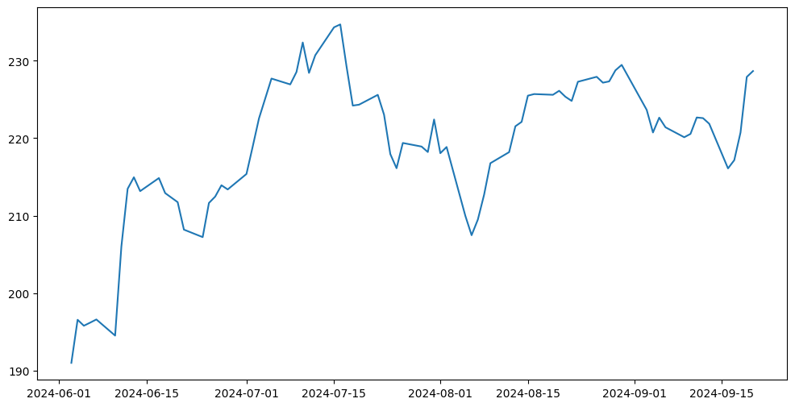
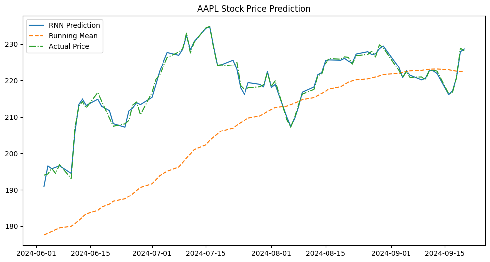

import pandas as pd
from tqdm.notebook import tqdm
from datasets import load_dataset
from huggingface_hub import list_datasets
import torch
from sklearn.preprocessing import LabelEncoder, OneHotEncoder
label_encoder = LabelEncoder()
onehot_encoder = OneHotEncoder()
import numpy as np
import random
# Example categorical data
# Initialize the LabelEncoder
# Get a list of all datasetsall_datasets = list_datasets()
ds_l = list(all_datasets)
titanic_dataset_list = sorted([{'id': i.id, 'downloads' : i.downloads} for i in ds_l if 'titanic' in i.id.lower()],key=lambda x: x['downloads'], reverse=True)titanic_dataset_hf = load_dataset("lewtun/titanic")
titanic_dataset_hf['train'][0], titanic_dataset_hf['test'][-1]({'PassengerId': 1,
'Survived': 0,
'Pclass': 3,
'Name': 'Braund, Mr. Owen Harris',
'Sex': 'male',
'Age': 22.0,
'SibSp': 1,
'Parch': 0,
'Ticket': 'A/5 21171',
'Fare': 7.25,
'Cabin': None,
'Embarked': 'S'},
{'PassengerId': 1309,
'Survived': -1,
'Pclass': 3,
'Name': 'Peter, Master. Michael J',
'Sex': 'male',
'Age': None,
'SibSp': 1,
'Parch': 1,
'Ticket': '2668',
'Fare': 22.3583,
'Cabin': None,
'Embarked': 'C'})titanic_dataset_df_train = pd.DataFrame(titanic_dataset_hf['train'])
titanic_dataset_df_train.head()| PassengerId | Survived | Pclass | Name | Sex | Age | SibSp | Parch | Ticket | Fare | Cabin | Embarked | |
|---|---|---|---|---|---|---|---|---|---|---|---|---|
| 0 | 1 | 0 | 3 | Braund, Mr. Owen Harris | male | 22.0 | 1 | 0 | A/5 21171 | 7.2500 | None | S |
| 1 | 2 | 1 | 1 | Cumings, Mrs. John Bradley (Florence Briggs Th... | female | 38.0 | 1 | 0 | PC 17599 | 71.2833 | C85 | C |
| 2 | 3 | 1 | 3 | Heikkinen, Miss. Laina | female | 26.0 | 0 | 0 | STON/O2. 3101282 | 7.9250 | None | S |
| 3 | 4 | 1 | 1 | Futrelle, Mrs. Jacques Heath (Lily May Peel) | female | 35.0 | 1 | 0 | 113803 | 53.1000 | C123 | S |
| 4 | 5 | 0 | 3 | Allen, Mr. William Henry | male | 35.0 | 0 | 0 | 373450 | 8.0500 | None | S |
titanic_dataset_df_train[titanic_dataset_df_train.Cabin.str.startswith("B").fillna(False)].head()/var/folders/2z/hm_pwbd91vjf6y817f4mp5pc0000gn/T/ipykernel_10730/3312721023.py:1: FutureWarning: Downcasting object dtype arrays on .fillna, .ffill, .bfill is deprecated and will change in a future version. Call result.infer_objects(copy=False) instead. To opt-in to the future behavior, set `pd.set_option('future.no_silent_downcasting', True)`
titanic_dataset_df_train[titanic_dataset_df_train.Cabin.str.startswith("B").fillna(False)].head()| PassengerId | Survived | Pclass | Name | Sex | Age | SibSp | Parch | Ticket | Fare | Cabin | Embarked | |
|---|---|---|---|---|---|---|---|---|---|---|---|---|
| 31 | 32 | 1 | 1 | Spencer, Mrs. William Augustus (Marie Eugenie) | female | NaN | 1 | 0 | PC 17569 | 146.5208 | B78 | C |
| 54 | 55 | 0 | 1 | Ostby, Mr. Engelhart Cornelius | male | 65.0 | 0 | 1 | 113509 | 61.9792 | B30 | C |
| 61 | 62 | 1 | 1 | Icard, Miss. Amelie | female | 38.0 | 0 | 0 | 113572 | 80.0000 | B28 | None |
| 118 | 119 | 0 | 1 | Baxter, Mr. Quigg Edmond | male | 24.0 | 0 | 1 | PC 17558 | 247.5208 | B58 B60 | C |
| 139 | 140 | 0 | 1 | Giglio, Mr. Victor | male | 24.0 | 0 | 0 | PC 17593 | 79.2000 | B86 | C |
# def custom_agg_func(sub_df):
# return(5)
# titanic_dataset_df_train.groupby('Survived').agg(
# product_of_age = ('Age', 'prod'),
# prod_age_fare =
# )
def product_sum(group):
print(group.index)
return group.head(2)
result = titanic_dataset_df_train.groupby('Survived').apply(
func=product_sum
)Index([ 0, 4, 5, 6, 7, 12, 13, 14, 16, 18,
...
877, 878, 881, 882, 883, 884, 885, 886, 888, 890],
dtype='int64', length=549)
Index([ 1, 2, 3, 8, 9, 10, 11, 15, 17, 19,
...
865, 866, 869, 871, 874, 875, 879, 880, 887, 889],
dtype='int64', length=342)/var/folders/2z/hm_pwbd91vjf6y817f4mp5pc0000gn/T/ipykernel_10730/3952189283.py:14: DeprecationWarning: DataFrameGroupBy.apply operated on the grouping columns. This behavior is deprecated, and in a future version of pandas the grouping columns will be excluded from the operation. Either pass `include_groups=False` to exclude the groupings or explicitly select the grouping columns after groupby to silence this warning.
result = titanic_dataset_df_train.groupby('Survived').apply(result| PassengerId | Survived | Pclass | Name | Sex | Age | SibSp | Parch | Ticket | Fare | Cabin | Embarked | ||
|---|---|---|---|---|---|---|---|---|---|---|---|---|---|
| Survived | |||||||||||||
| 0 | 0 | 1 | 0 | 3 | Braund, Mr. Owen Harris | male | 22.0 | 1 | 0 | A/5 21171 | 7.2500 | None | S |
| 4 | 5 | 0 | 3 | Allen, Mr. William Henry | male | 35.0 | 0 | 0 | 373450 | 8.0500 | None | S | |
| 1 | 1 | 2 | 1 | 1 | Cumings, Mrs. John Bradley (Florence Briggs Th... | female | 38.0 | 1 | 0 | PC 17599 | 71.2833 | C85 | C |
| 2 | 3 | 1 | 3 | Heikkinen, Miss. Laina | female | 26.0 | 0 | 0 | STON/O2. 3101282 | 7.9250 | None | S |
trans = label_encoder.fit(titanic_dataset_df_train.Sex)
titanic_dataset_df_train['sex_transformed'] = trans.transform(titanic_dataset_df_train.Sex)titanic_dataset_df_train.head()| PassengerId | Survived | Pclass | Name | Sex | Age | SibSp | Parch | Ticket | Fare | Cabin | Embarked | sex_transformed | |
|---|---|---|---|---|---|---|---|---|---|---|---|---|---|
| 0 | 1 | 0 | 3 | Braund, Mr. Owen Harris | male | 22.0 | 1 | 0 | A/5 21171 | 7.2500 | None | S | 1 |
| 1 | 2 | 1 | 1 | Cumings, Mrs. John Bradley (Florence Briggs Th... | female | 38.0 | 1 | 0 | PC 17599 | 71.2833 | C85 | C | 0 |
| 2 | 3 | 1 | 3 | Heikkinen, Miss. Laina | female | 26.0 | 0 | 0 | STON/O2. 3101282 | 7.9250 | None | S | 0 |
| 3 | 4 | 1 | 1 | Futrelle, Mrs. Jacques Heath (Lily May Peel) | female | 35.0 | 1 | 0 | 113803 | 53.1000 | C123 | S | 0 |
| 4 | 5 | 0 | 3 | Allen, Mr. William Henry | male | 35.0 | 0 | 0 | 373450 | 8.0500 | None | S | 1 |
mapping = dict(zip(label_encoder.classes_, label_encoder.transform(label_encoder.classes_))){label: index for index, label in enumerate(label_encoder.classes_)}{'female': 0, 'male': 1}label_encoder.classes_array(['female', 'male'], dtype=object)#onehot_encoder = OneHotEncoder(sparse_output=False) # Set sparse_output=False to get a dense array
onehot_encoder = OneHotEncoder(sparse_output=False)
onehot_encoder.fit_transform(titanic_dataset_df_train['Pclass'].values.reshape(-1, 1))array([[0., 0., 1.],
[1., 0., 0.],
[0., 0., 1.],
...,
[0., 0., 1.],
[1., 0., 0.],
[0., 0., 1.]])onehot_encoder.get_feature_names_out(['Pclass'])array(['Pclass_1', 'Pclass_2', 'Pclass_3'], dtype=object)import torchimport yfinance as yf
import pandas as pd
import numpy as np
from sklearn.preprocessing import MinMaxScaler
import torch
import torch.nn as nn
import torch.optim as optim
import matplotlib.pyplot as plt
# Fetch stock data for the last 6 months
ticker = "AAPL" # Example stock ticker
stock_data = yf.download(ticker, period="6mo", interval="1d")
# Keep only the 'Close' prices for simplicity
stock_data = stock_data[['Close']]
# Normalize the data
scaler = MinMaxScaler(feature_range=(0, 1))
scaled_data = scaler.fit_transform(stock_data)
# Create sequences
def create_sequences(data, seq_length):
X, y = [], []
for i in range(len(data) - seq_length):
X.append(data[i:i + seq_length])
y.append(data[i + seq_length])
return np.array(X), np.array(y)
# Use 50 days as the sequence length
seq_length = 50
X, y = create_sequences(scaled_data, seq_length)
# Convert to PyTorch tensors
X = torch.tensor(X, dtype=torch.float32)
y = torch.tensor(y, dtype=torch.float32)
# Define the RNN model using torch.nn.Linear for transformations
class SimpleRNN(nn.Module):
def __init__(self, input_size, hidden_size, output_size):
super(SimpleRNN, self).__init__()
self.hidden_size = hidden_size
self.W_XH = nn.Linear(input_size, hidden_size)
self.W_AA = nn.Linear(hidden_size, hidden_size)
self.W_AY = nn.Linear(hidden_size, output_size)
self.h_t = torch.zeros(hidden_size)
def forward(self, x):
outputs = []
batch_size = x.size(0)
self.h_t = torch.zeros(batch_size, self.hidden_size) # Reset hidden state for each forward pass
for t in range(x.size(1)):
self.h_t = torch.tanh(self.W_XH(x[:, t]) + self.W_AA(self.h_t))
y_t = self.W_AY(self.h_t)
outputs.append(y_t)
return torch.stack(outputs, dim=1)[:, -1]
# Initialize the RNN
input_size = X.size(2)
hidden_size = 16
output_size = 1
rnn = SimpleRNN(input_size, hidden_size, output_size)
# Training parameters
learning_rate = 0.001
num_epochs = 10000
loss_fn = nn.MSELoss()
optimizer = optim.Adam(rnn.parameters(), lr=learning_rate)
# Training loop
losses = []
for epoch in range(num_epochs):
optimizer.zero_grad()
output = rnn(X)
loss = loss_fn(output, y)
loss.backward()
optimizer.step()
losses.append(loss.item())
# Make predictions
with torch.no_grad():
predictions = rnn(X).numpy()
# Denormalize predictions
predicted_prices = scaler.inverse_transform(predictions)
# Running mean
running_mean = stock_data['Close'].rolling(window=50).mean().dropna().values
# Plot results
plt.figure(figsize=(12, 6))
plt.plot(stock_data.index[seq_length:], predicted_prices, label="RNN Prediction")
plt.plot(stock_data.index[seq_length:], running_mean, label="Running Mean", linestyle='--')
plt.plot(stock_data.index[seq_length:], stock_data['Close'][seq_length:], label="Actual Price", linestyle='-.')
plt.legend()
plt.title(f'{ticker} Stock Price Prediction')
plt.show()
# Show the training loss plot
plt.figure(figsize=(12, 6))
plt.plot(range(num_epochs), losses, label="Training Loss")
plt.xlabel("Epochs")
plt.ylabel("Loss")
plt.title("Training Loss over Epochs")
plt.show()
[*********************100%***********************] 1 of 1 completed--------------------------------------------------------------------------- ValueError Traceback (most recent call last) Cell In[99], line 92 90 plt.figure(figsize=(12, 6)) 91 plt.plot(stock_data.index[seq_length:], predicted_prices, label="RNN Prediction") ---> 92 plt.plot(stock_data.index[seq_length:], running_mean, label="Running Mean", linestyle='--') 93 plt.plot(stock_data.index[seq_length:], stock_data['Close'][seq_length:], label="Actual Price", linestyle='-.') 94 plt.legend() File ~/personal/sayan_github/dl-lecture-notes/.venv/lib/python3.12/site-packages/matplotlib/pyplot.py:3794, in plot(scalex, scaley, data, *args, **kwargs) 3786 @_copy_docstring_and_deprecators(Axes.plot) 3787 def plot( 3788 *args: float | ArrayLike | str, (...) 3792 **kwargs, 3793 ) -> list[Line2D]: -> 3794 return gca().plot( 3795 *args, 3796 scalex=scalex, 3797 scaley=scaley, 3798 **({"data": data} if data is not None else {}), 3799 **kwargs, 3800 ) File ~/personal/sayan_github/dl-lecture-notes/.venv/lib/python3.12/site-packages/matplotlib/axes/_axes.py:1779, in Axes.plot(self, scalex, scaley, data, *args, **kwargs) 1536 """ 1537 Plot y versus x as lines and/or markers. 1538 (...) 1776 (``'green'``) or hex strings (``'#008000'``). 1777 """ 1778 kwargs = cbook.normalize_kwargs(kwargs, mlines.Line2D) -> 1779 lines = [*self._get_lines(self, *args, data=data, **kwargs)] 1780 for line in lines: 1781 self.add_line(line) File ~/personal/sayan_github/dl-lecture-notes/.venv/lib/python3.12/site-packages/matplotlib/axes/_base.py:296, in _process_plot_var_args.__call__(self, axes, data, *args, **kwargs) 294 this += args[0], 295 args = args[1:] --> 296 yield from self._plot_args( 297 axes, this, kwargs, ambiguous_fmt_datakey=ambiguous_fmt_datakey) File ~/personal/sayan_github/dl-lecture-notes/.venv/lib/python3.12/site-packages/matplotlib/axes/_base.py:486, in _process_plot_var_args._plot_args(self, axes, tup, kwargs, return_kwargs, ambiguous_fmt_datakey) 483 axes.yaxis.update_units(y) 485 if x.shape[0] != y.shape[0]: --> 486 raise ValueError(f"x and y must have same first dimension, but " 487 f"have shapes {x.shape} and {y.shape}") 488 if x.ndim > 2 or y.ndim > 2: 489 raise ValueError(f"x and y can be no greater than 2D, but have " 490 f"shapes {x.shape} and {y.shape}") ValueError: x and y must have same first dimension, but have shapes (77,) and (78,)

# Ensure both arrays have the same length by trimming the longer one
min_length = min(len(predicted_prices), len(running_mean))
predicted_prices = predicted_prices[-min_length:] # Trim from the start
running_mean = running_mean[-min_length:] # Trim from the start
actual_prices = stock_data['Close'][seq_length:].values[-min_length:] # Trim the actual prices
# Plot results
plt.figure(figsize=(12, 6))
plt.plot(stock_data.index[seq_length:][-min_length:], predicted_prices, label="RNN Prediction")
plt.plot(stock_data.index[seq_length:][-min_length:], running_mean, label="Running Mean", linestyle='--')
plt.plot(stock_data.index[seq_length:][-min_length:], actual_prices, label="Actual Price", linestyle='-.')
plt.legend()
plt.title(f'{ticker} Stock Price Prediction')
plt.show()
from datasets import load_dataset
# Load the WikiText-2 dataset
dataset = load_dataset('wikitext', 'wikitext-2-raw-v1', split='train')
# Display the first few lines
print(dataset['text'][:5])['', ' = Valkyria Chronicles III = \n', '', ' Senjō no Valkyria 3 : Unrecorded Chronicles ( Japanese : 戦場のヴァルキュリア3 , lit . Valkyria of the Battlefield 3 ) , commonly referred to as Valkyria Chronicles III outside Japan , is a tactical role @-@ playing video game developed by Sega and Media.Vision for the PlayStation Portable . Released in January 2011 in Japan , it is the third game in the Valkyria series . Employing the same fusion of tactical and real @-@ time gameplay as its predecessors , the story runs parallel to the first game and follows the " Nameless " , a penal military unit serving the nation of Gallia during the Second Europan War who perform secret black operations and are pitted against the Imperial unit " Calamaty Raven " . \n', " The game began development in 2010 , carrying over a large portion of the work done on Valkyria Chronicles II . While it retained the standard features of the series , it also underwent multiple adjustments , such as making the game more forgiving for series newcomers . Character designer Raita Honjou and composer Hitoshi Sakimoto both returned from previous entries , along with Valkyria Chronicles II director Takeshi Ozawa . A large team of writers handled the script . The game 's opening theme was sung by May 'n . \n"]